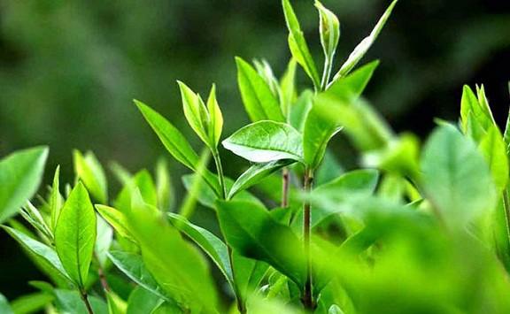

TEA?
ヨーロッパが西洋の料理芸術の頂点としてアルコールに誇りを持っている場合、
東洋にはお茶がありますが、お茶は純粋ですが味、繊細さが豊富で、
五感の楽しさを必要とします 感覚。 お茶はアジアの味のクラスです。
ティーツリー

お茶は、水に次いで世界で2番目に人気のある飲み物です。
世界中のすべてのお茶は、熱帯高地で育つティーツリー（Cemellia Senensis）と呼ばれる単一の木から作られています。
それは木質種ですが、栽培されると、多くの場合、人々はベッドにお茶を植えて、絶えず伐採します。
お茶の種類
酸化のレベルに応じて、茶は3つの主要なグループに分類されます。
1.緑茶：酸化されていません。
2.ウーロン茶：部分酸化。
3.紅茶：完全に酸化。
白茶（天日干しのみ）、フォーユエンティー（発酵茶のために何年も醸造されていた）など、いくつかの特別な方法で処理されるため、
いくつかの種類のお茶も別々に配置されます。
茶の種類、植える場所、収穫時期、5段階の加工方法の違いにより、
非常に豊かな風味を持つ数千種類の茶が生産されます。
世界のお茶
お茶には何千年もの歴史があり、
アジアの文化に深く刻まれていますが、お茶は非常に「地元」です。
通常、各地域では特定の種類のお茶のみが人気があり、他
の地域では他のお茶にほとんど気づいていません。
1.中国：紅茶とプーアルで人気
2.日本：抹茶と日本茶
3.台湾：曹操O龍茶
4.インド：チャイティー
5.ヨーロッパと北米：紅茶
6.ベトナム：緑茶